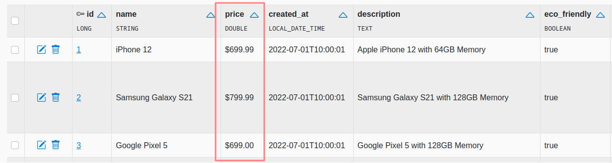
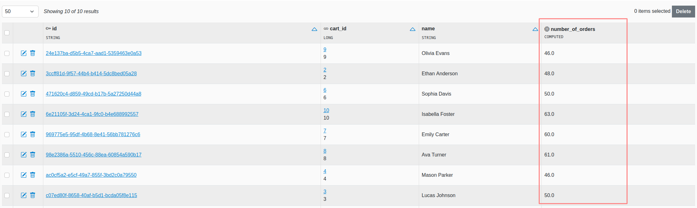

Reference Guide
SnapAdmin v0.2.1
1. Introduction
SnapAdmin is a tool to easily build customizable database management interfaces with CRUD operations (and more!) for Spring Boot+JPA apps.
It does so by scanning your JPA-annotated @Entity classes and building the required functionality at runtime. Since it won't generate actual code you won't have to change your existing code base, and this makes it easy to integrate. Moreover, every time you update your classes, all changes will be reflected automatically on the web UI.
On the other hand, this approach requires to interact correctly with all JPA annotations and adapt our behaviour accordingly. This is not an easy task given the large surface area of possible behaviours introduced with annotations and can sometimes introduce bugs. If you encounter problems, please report it as an issue on Github.
The rest of this guide outlines how to install, configure and customize SnapAdmin and, where applicable, it documents known interactions with JPA annotations. If, instead, you are looking for the Javadoc, you can find it here.
2. Getting started
Getting started with SnapAdmin requires including it as a dependency and minimal configuration.
2.1 Installation
Since SnapAdmin is distributed on Maven, the easiest way to start is to include it in your pom.xml:
<dependency>
<groupId>tech.ailef</groupId>
<artifactId>snap-admin</artifactId>
<version>0.2.1</version>
</dependency>
TIP Go to the Maven repository to retrieve the exact snippet for the latest stable release.
Alternatively, if you want the latest unstable release, you can clone the main branch of the Github repo and execute mvn install -D skipTests in the project's directory. This will install the library in your local repository, which you can then include using the same snippet as above, but replacing the version number with the one contained in the pom.xml file of the code you pulled from Github.
2.2 Configuration
After including the dependency, a few configuration steps are required on your end in order to integrate it into your project.
Configure your application.properties file:
## SnapAdmin is not enabled by default
snapadmin.enabled=true
## The first-level part of the URL path: http://localhost:8080/${baseUrl}/
snapadmin.baseUrl=admin
## The package(s) that contain your @Entity classes
## accepts multiple comma separated values
snapadmin.modelsPackage=your.models.package,your.second.models.package
## At the moment, it's required to have open-in-view set to true.
# spring.jpa.open-in-view=true
## OPTIONAL PARAMETERS
## Whether to enable SnapAdmin
# snapadmin.enabled=true
#
## Set to true if you need to run the tests, as it will customize
## the database configuration for the internal DataSource
# snapadmin.testMode=false
#
## SQL console enable/disable (true by default)
# snapadmin.sqlConsoleEnabled=false
After this, you must tell Spring to import the SnapAdmin configuration. To do this, annotate your @SpringBootApplication class containing the main method with the following:
@ImportAutoConfiguration(SnapAdminAutoConfiguration.class)
This will autoconfigure the various SnapAdmin components when your application starts.
If everything is setup correctly, you will see SnapAdmin confirming it in the log messages that appear when you start your application. Keep in mind that if you specify the wrong models package, it will still work but provide you an empty interface. Visit http://localhost:8080/admin (replace the correct port and base path with your settings) to check if everything is working correctly.
2.2.1 Known issues
- (SnapAdmin <= 0.1.8) Transactional: If you're using
@Transactionalmethods, you need to annotate your transaction manager with the@Primaryannotation, as you may otherwise get aNoUniqueBeanDefinitionException(read here for more info).
2.3 Supported features
2.3.1 Supported JPA annotations
- Core: @Entity, @Table, @Column, @Lob, @Id, @GeneratedValue
- Relationships: @OneToMany, @ManyToOne, @ManyToMany, @OneToOne
- Validation: all JPA validation annotations (
jakarta.validation.constraints.*)
The behaviours specified with these annotations should be applied automatically by SnapAdmin. Using non-supported annotations will not necessarily result in an error, as they are simply ignored. Depending on what the annotation actually does, this could be just fine or result in an error if it interferes with something that SnapAdmin relies on.
The following list documents the most significant interactions between JPA annotations and SnapAdmin.
Annotation name |
Description |
|---|---|
@Entity |
Used to detect the candidate classes to scan. |
@Column |
Used to detect the column name and its nullability. |
@GeneratedValue |
When you have an |
2.3.2 Supported field types
- Double, Float, Integer, Short, Byte, Character, BigDecimal, BigInteger
- Boolean
- String, UUID
- Date, LocalDate, LocalDateTime, OffsetDateTime, Instant
- byte[]
- Enum
For these field types, the interface will be already customized. For example, a file upload input is provided to fill a byte[] field or a date-picker for the various date types.
Unsupported field types are handled as gracefully as possible, meaning that when such a field is detected the application will still run. However, this field will never be displayed in the web interface. This means that it won't be possible to enter values for this field when editing or creating, leaving it with the default NULL value. If the field is not nullable, this implies you won't be able to create items.
If you're using a field type that you think should be supported, please open an issue on Github.
To check if your code contains unsupported fields:
- In the SnapAdmin home page, a red icon is shown next to each table if problems have been detected; click this icon to get the detailed list of errors.
- At startup, unsupported field types are printed in the logs (you should see them if you
grep SnapAdmin).
3. Customization
There are two ways to customize the appearance and behaviour of SnapAdmin:
- Applying annotations on your
@Entityclasses, fields and methods - Using the Settings panel through the web interface
Annotations are used primarily to customize behaviour and add custom logic to your classes. If, instead, you're looking to customize appearance of the web UI, it's most likley through the Settings panel.
3.1 Supported annotations
These annotations can be placed on classes, methods and fields to customize the behaviour of SnapAdmin.
3.1.1 @DisplayName
@DisplayName
public String getFullName() {
return firstName + " " + lastName;
}
When displaying a reference to an item, we show its primary key by default. If a class has a @DisplayName, this method will be used in addition to the primary key whenever possible, giving the user a more readable option.
{kind=link}
3.1.2 @DisplayFormat
@DisplayFormat(format = "$%.2f")
private Double price;
Specify a format string to apply when displaying the field.
{kind=link}
3.1.3 @ComputedColumn
Supported parameters
| Name | Type | Required | Description |
|---|---|---|---|
| name | String | false | The name of this column in the web interface. The method's name is used if this value is not specified. |
Code example
@ComputedColumn
public double numberOfOrders() {
return orders.size();
}
This annotation can be used to add values computed at runtime that are shown like additional columns.
{kind=link}
NOTE If your computed columns are computationally expensive (e.g because they use joins) they can affect the interface loading speed. In particular, the list view is the most affected, as these methods will get called for each item in the list.
3.1.4 @Filterable
Supported parameters
| Name | Required | Type | Description |
|---|---|---|---|
| type | false | Enum (DEFAULT, CATEGORICAL) |
If CATEGORICAL, this changes the filter in the UI to shows all the possible values directly instead of providing an autocomplete form. |
Code example
@Filterable
private LocalDate createdAt;
@Filterable(type=FilterableType.CATEGORICAL)
@ManyToOne
private User user;
Place on one or more fields in a class to activate the faceted search feature. This will allow you to easily combine all these filters when operating on the table. Can only be placed on fields that correspond to physical columns on the table (e.g. no @ManyToMany/@OneToMany) and that are not binary (byte[]).
3.1.5 @DisplayImage
@DisplayImage
@Lob
private byte[] image;
This annotation can be placed on binary fields to declare they are storing an image and that we want it displayed when possible. The image will be shown as a small thumbnail.
3.1.6 @HiddenColumn
Code example
@HiddenColumn
private String cardNumber;
Marks a field as hidden. This column and its values will not be shown in the list and detail view for objects of this type. If the column is nullable, it will be hidden in the create and edit forms as well (and this will result in the column always being NULL when creating/editing objects). If, instead, it's not nullable column, it will be included in the create and edit forms as it would otherwise prevent the creation of items.
Please note that this is not meant as a security feature, but rather to hide uninformative columns that clutter the interface. In fact, since the create and edit form come pre-filled with all the information, these views will show the value of the hidden column (if it's not nullable).
3.1.7 @ReadOnly
Code example
@ReadOnly
private LocalDate createdAt;
Marks a field as read-only. The field can be filled at creation time, but it will be shown as disabled during edits, making it impossible to change its value after creation.
3.1.8 @DisableCreate, @DisableEdit, @DisableDelete
Code example
@Entity
@DisableCreate
public class Product { ... }
Disables the possibility of creating/editing/deleting items for the specific table.
3.1.9 @DisableExport
Code example
@Entity
@DisableExport
public class User { ... }
Disables the export functionality for this table.
3.1.10 @Disable
Code example
@Entity
@Disable
public class Payment { ... }
Disables SnapAdmin on this table, by ignoring it during the initialization phase.
3.2 The Settings panel
As mentioned earlier, the Settings panel primarily provides options to customize the branding/appearance of the web interface. These settings are persistent across restarts and are stored in an embedded H2 database (file named snapadmin_internal), along with other data required by SnapAdmin.
4. Security
SnapAdmin does not implement authentication and/or authorization mechanisms. However, you can use a standard Spring Security configuration in order to limit access to the web UI or specific parts of it.
All SnapAdmin routes start with the value of snapadmin.baseUrl property, and all write operations (edit, create, delete) are implemented as POST calls. The following code provides an example security configuration thatyou can further customize:
@Autowired
private SnapAdminProperties properties;
@Bean
SecurityFilterChain filterChain(HttpSecurity http) throws Exception {
String baseUrl = properties.getBaseUrl();
return http.authorizeHttpRequests(auth -> {
/* POST methods (create, edit and delete) require ADMIN role
* Note that with this configuration users will still be able to access the edit/create page
* but they will get a Forbidden error after submitting the form if they are not authorized.
* You can also stop the serving of these pages altogether by customizing the route matchers
*/
auth.requestMatchers(AntPathRequestMatcher.antMatcher(HttpMethod.POST, "/" + baseUrl + "/**"))
.hasAuthority("ADMIN")
// Read-only SnapAdmin routes require authentication (any role)
.requestMatchers(AntPathRequestMatcher.antMatcher("/" + baseUrl + "/**"))
.authenticated()
// The other routes are not protected (adapt to your needs)
.requestMatchers(AntPathRequestMatcher.antMatcher("/**")).permitAll();
})
.formLogin(l -> l.loginPage("/login").permitAll())
/* This custom exception handling code is only needed if you want to have
* nicer Forbidden error pages, for cases when a user tries to perform an
* action they don't have the correct privileges for (e.g., in the previous
* configuration a user without ADMIN role trying to edit/create items).
* The exception handling is delegated to the default handler if the
* error didn't occur on a SnapAdmin route. You can further customize this
* according to your needs or just not use it. In this last scenario, your
* default access denied handler will be used even for errors occurring inside
* SnapAdmin.
*/
.exceptionHandling(e -> e.accessDeniedHandler((req, res, ex) -> {
AccessDeniedHandlerImpl defaultHandler = new AccessDeniedHandlerImpl();
if (req.getServletPath().toString().startsWith("/" + baseUrl + "/")) {
res.sendRedirect("/" + baseUrl + "/forbidden");
} else {
defaultHandler.handle(req, res, ex);
}
}))
.build();
}
Authorization
If your authentication related classes (e.g. User and Role) are managed by SnapAdmin it might be possible to edit them, depending on your security configuration.
This means that it might be possible for a USER to edit their own roles and escalate their privileges to ADMIN.
To setup things correctly so that this can't happen you have a few options:
Exclude auth-related classes from SnapAdmin
If you don't want these classes to be accessible at all from the UI, the best option is to just place them in a package that's not managed by SnapAdmin. Alternatively, if changing the package structure is not an option, you can apply them the @Disable annotation to obtain an equivalent result.
Adapt SecurityConfiguration
If you want these classes to be accessible from SnapAdmin securely, you need to change your security configuration so that write operations on these tables can only be performed by users with the right privileges. For example, you can add something like this to your security configuration:
.requestMatchers(
AntPathRequestMatcher.antMatcher("/" + baseUrl + "/model/tech.ailef.snapadmin.auth.models.User")
).hasAuthority("ADMIN")
.requestMatchers(
AntPathRequestMatcher.antMatcher("/" + baseUrl + "/model/tech.ailef.snapadmin.auth.models.Role")
).hasAuthority("ADMIN")
With this configuration, only ADMIN users are allowed to access the SnapAdmin routes for the protected tables. As always, you can customize this further to your needs as long as you follow these guidelines.
You can look at the SnapAdmin auth test project to see a full implementation and use it as a blueprint for your own projects.
5. Troubleshooting
When setting up SnapAdmin for the first time, problems most commonly occur at startup, causing the application to stop. If this is the case, first check that you have correctly configured your application.properties file. If everything is correct here, the problem might be related to one or more of your @Entity classes (or the rest of your code in general) which might be using some unsupported feature and/or annotation.
You can enable DEBUG-level logs (e.g. with logging.level.root=DEBUG) to pinpoint the cause error. Looking at those in combination with the stack trace should provide enough information to understand what is going wrong. Keep in mind that if the application doesn't start at all, it's probably a bug: you can open an issue on Github, providing the stacktrace, the debug logs and all other relevant information.